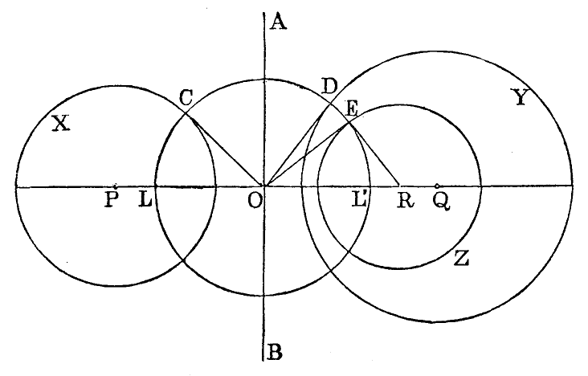
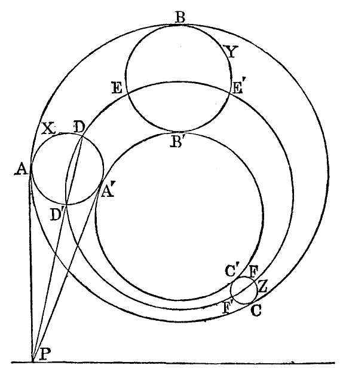

Book VI, Section V: Coaxal Circles¶
A Sequel to the First Six Books of the Elements of Euclid (5th ed., 1888, pp. 113–126)
f. 0139 · p. 113SECTION V.¶
COAXAL CIRCLES.¶
In Book III., Section I., Prop. 24, we have proved the following theorem:—
“If from any point $P$ tangents be drawn to two circles, the difference of their squares is equal twice the rectangle contained by the perpendicular let fall from $P$ on the radical axis and the distance between their centres.”
The following special cases of this theorem are deserving of notice:—
(1). Let $P$ be on the circumference of one of the circles, and we have—If from any point $P$ in the circumference of one circle a tangent be drawn to another circle, the square of the tangent is equal twice the rectangle contained by the distance between their centres and the perpendicular from $P$ on the radical axis.
(2). Let the circle to which the tangent is drawn be one of the limiting points, then the square of the line drawn from one of the limiting points to any point of a circle of a coaxal system varies as the perpendicular from that point on the radical axis.
(3). If $X, Y, Z$ be three coaxal circles, the tangents drawn from any point of $Z$ to $X$ and $Y$ are in a given ratio.
(4). If tangents drawn from a variable point $P$ to two given circles $X$ and $Y$ have a given ratio, the locus of $P$ is a circle coaxal with $X$ and $Y$.
(5). The circle of similitude of two given circles is coaxal with the two circles.
f. 0140 · p. 114(6). If $A$ and $B$ be the points of contact, upon two circles $X$ and $Y$, of tangents drawn from any point of their circle of similitude, then the tangent from $A$ to $Y$ is equal to the tangent from $B$ to $X$.
Con.—If the circles have real points of intersection, the problem is solved by describing circles through these points and any third point taken arbitrarily.
If the given circles have not real points of intersection, we proceed as follows:—
Let $X$ and $Y$ be the given $\odot$s, $P$ and $Q$ their centres: draw $AB$, the radical axis of $X$ and $Y$, intersecting $PQ$ in $O$: from $O$ draw two tangents $OC, OD$ to $X$ and $Y$; then $OC = OD$, and the $\odot$ described with $O$ as centre and $OD$ as radius will cut the two $\odot$s $X$ and $Y$ orthogonally. Now take any point $E$ in this orthogonal $\odot$, and draw the tangent $ER$ meeting the line $PQ$ in $R$: from $R$ as centre, and $RE$ as radius, describe a $\odot Z$; then $Z$ will be coaxal with $X$ and $Y$. For the line $ER$ being a tangent to the $\odot CDE$, the $\angle OER$ is right, $\therefore OE$ is a tangent to $Z$; and since $OD = OE$, the tangents from $O$ to the $\odot$s $Y$ and $Z$ are equal:


hence $OA$ is the radical axis of $Y$ and $Z$; $\therefore$ the three $\odot$s $X, Y, Z$ are coaxal. In like manner, we can get another circle coaxal with $X$ and $Y$ by taking any other point in the $\odot CDE$, and drawing a tangent, and repeating the same construction as with the $\odot Z$. In this way we evidently get two infinite systems of circles coaxal with $X$ and $Y$, namely, one system at each side of the radical axis. The smallest circle of each system is a point, namely, the point at each side of the radical axis in which the line joining the centres of $X$ and $Y$ cuts the $\odot CDE$. These are the limiting points, and in this point of view we see that each limiting point is to be regarded as an infinitely small circle. The two infinite systems of circles are to be regarded as one coaxal system, the circles of which range from infinitely large to infinitely small—the radical axis being the infinitely large circle, and the limiting points the infinitely small.
Cor. 1.—No circle of a system with real limiting points can have its centre between the limiting points.
Cor. 2.—The centres of the circles of a coaxal system are collinear.
Cor. 3.—The circle described on the distance between the limiting points as diameter cuts all the circles of the system orthogonally.
Cor. 4.—Every circle passing through the limiting points cuts all the circles of the system orthogonally.
Cor. 5.—The limiting points are inverse points with respect to each circle of the system.
Cor. 6.—The polar of either limiting point, with respect to every circle of the system, passes through the other, and is perpendicular to the line of collinearity of their centres.
This is Prop. 26, Book III., Section I. The following are important deductions:—
Cor. 1.—The circle described on the line joining a point $A$ to any point $B$ in its polar, with respect to a given circle, cuts that circle orthogonally.
Cor. 2.—The intersection of the perpendiculars of the triangle formed by a pair of conjugate points $A, B$, with respect to a given circle and its centre $O$, is the pole of the line $AB$.
Cor. 3.—The polars of any point $A$ with respect to a coaxal system are concurrent. For, through $A$ and through the limiting points describe a circle: this (Cor. 4, Prop. 2) will cut all the circles orthogonally, and the polars of $A$ with respect to all the circles of the system will pass through the point diametrically opposite to $A$ on this orthogonal circle; hence they are concurrent.
Cor. 4.—If the polars of a variable point with respect to three given circles be concurrent, the locus of the point is the circle which cuts the three given circles orthogonally.
Dem.—The two first meet on the radical axis of $X_1, X_2$; the second and third on the radical axis of $X_2, X_3$; but this, by hypothesis, is the radical axis of $X_1, X_2$; hence the Proposition is evident.
Dem.—Let $X, Y$ be one pair cutting $W, V$, the other pair, orthogonally; then, since $X$ cuts $W$ and $V$ orthogonally, the tangents drawn from the centre of $X$ to $W$ and $V$ are equal; hence the radical axis of $W$ and $V$ passes through the centre of $X$. In like manner the radical axis of $W$ and $V$ passes through the centre of $Y$; $\therefore$ the line joining the centres of the $\odot$s $X$ and $Y$ is the radical axis of the $\odot$s $W$ and $V$. In the same way it can be shown that the line joining the centres of $W$ and $V$ is the radical axis of $X$ and $Y$.
Cor. 1.—If one pair of the circles, such as $W$ and $V$, do not intersect, the other pair, $X, Y$, will intersect, because they must pass through the limiting points of $W$ and $V$.
Cor. 2.—Coaxal circles may be divided into two classes—one system not intersecting each other in real points, but having real limiting points; the other system intersecting in real points, and having imaginary limiting points.
Cor. 3.—If a system of circles be cut orthogonally by two circles they are coaxal.
Cor. 4.—If four circles be mutually orthogonal, the six lines joining their centres, two by two, are also their radical axes, taken two by two.
Dem.—Let $O$ be the centre of inversion, and $P$ the common centre of the concentric system. Through $P$ draw any two lines: these lines will cut the concentric system orthogonally, and therefore their inverses, which will be two circles passing through the point $O$ and through the inverse of $P$, will cut the inverse of the concentric system orthogonally; hence the inverse of the concentric system will be a coaxal system (Prop. 5, Cor. 3).
f. 0144 · p. 118Cor. 1.—The limiting points will be the centre of inversion, and the inverse of the common centre of the original system.
Cor. 2.—If a variable circle touch two concentric circles, it will cut any other circle concentric with them at a constant angle. Hence, by inversion, if a variable circle touch two circles of a coaxal system, it will cut any other circle of the system at a constant angle.
Cor. 3.—If a variable circle touch two fixed circles, its radius has a constant ratio to the perpendicular from its centre on the radical axis of the two circles, for it cuts the radical axis at a constant angle.
Cor. 4.—The inverse of a system of concurrent lines is a system of coaxal circles intersecting in two real points.
Cor. 5.—If a system of coaxal circles having real limiting points be inverted from either limiting point, they will invert into a concentric system of circles.
Cor. 6.—If a coaxal system of either species be inverted from any arbitrary point, it inverts into another system of the same species.
Dem.—This is Cor. 3 of the last Proposition; but it is true universally, and not only as proved there for the case where the circle cuts the radical axis. On account of its importance we give an independent proof here. Let the centres of the fixed circles be $O, O'$, and that of the variable circle $O''$. Join $OO'$, and produce it to meet the fixed circles in the points $C, C'$: upon $CC'$ describe a circle: let $O'''$ be its centre: let fall the perpendiculars $O''A, O'''B$ on the radical axis: let $D$ be the point of contact of $O''$ with $O$; then the lines $CD$ and $O'''O''$ will meet in the centre of similitude of the circles $O'', O'''$; but this centre is a point on the radical axis of the circles $O, O'$ (see Prop. 4, Section II.). Hence the point $E$ is on the radical axis, and, by similar triangles,
$$ O''A : O'''B :: O''E : O'''E :: \text{radius of } O'' : \text{radius of } O''', $$
$\therefore \text{radius of } O'' : O''A :: \text{radius of } O''' : O'''B$; but the two last terms of this proportion are constant, $\therefore \text{radius of } O'' : O''A \text{ in a constant ratio}$.
Let $CF$ be the chord, $K$ the point of contact, $E$ one of the limiting points: the angle $CEF$ is bisected by $EK$. For since the limiting point $E$ is coaxal with the circles $O, O'$, we have, by Prop. 1, (3),
$$ CE : CK :: FE : FK; \qquad \therefore EC : EF :: KC : KF. $$
Hence the angle $CEF$ is bisected (Book VI., Prop. III.). In like manner, if $G$ be the other limiting point, the angle $CGF$ is bisected by $GK$.
Cor. 1.—If the circles were external to each other, and the figure constructed, it would be found that the angles bisected would be the supplements of the angles $CEF, CGF$.
Cor. 2.—If a common tangent be drawn to two circles, lines drawn from the points of contact to either limiting point are perpendicular to each other; for they are the internal and external bisectors of an angle.
Cor. 3.—If three circles be coaxal, a common tangent to two of them will intersect the third in points which are harmonic conjugates to the points of contact; for the pencil from either limiting point will be a harmonic pencil.
f. 0146 · p. 120Cor. 4.—If a circle be described about the triangle $CEF$, its envelope will be a circle concentric with the circle whose centre is $O$; that is, with the circle whose chord is $CF$.
Let $A, B$ be the points of intersection of the coaxal system: through $A$ draw two lines intersecting the circles again in the two systems of points $C, D, E; C', D', E'$; then
$$ CD : DE :: C'D' : D'E'. $$
Dem.—Join the points $C, D, E, C', D', E'$ to $B$; then the $\triangle$s $BCD, BC'D'$ are evidently equiangular, as are also the triangles $BDE, BD'E'$; hence
$$ CD : DB :: C'D' : D'B; \qquad DB : DE :: D'B : D'E'; $$
therefore, ex aequali,
$$ CD : DE :: C'D' : D'E'. $$
Cor. 1.—If two lines be divided proportionally, the circles passing through their point of intersection and through pairs of homologous points are coaxal.
Cor. 2.—If from the point $B$ perpendiculars be drawn to the lines joining homologous points, the feet of these perpendiculars are collinear. For each lies on the line joining the feet of the perpendiculars from $B$ on the lines $AC, AC'$.
Cor. 3.—The circles described about the triangles formed by the lines joining any three pairs of homologous points all pass through $B$.
Cor. 4.—The intersection of the perpendiculars of all the triangles formed by the lines joining homologous points are collinear.
Cor. 5.—Any two lines joining homologous points are divided proportionally by the remaining lines of the system.
Analysis.—Let $X, Y, Z$ be the three given circles, $ABC, A'B'C'$ two circles which it is required to describe touching the three given circles; then, by Cor. 2, Prop. 4, Section IV., the circle $DEF$, which cuts $X, Y, Z$ orthogonally, will be the circle of inversion of $ABC, A'B'C'$, and the three circles $ABC, DEF, A'B'C'$ will be coaxal (Cor. 2, Prop. 1, Section IV.).
Now, consider the circle $X$, and the three circles $ABC, DEF, A'B'C'$; the radical axes of $X$ and these circles are concurrent (Prop. 4); but two of the radical axes are tangents at $A, A'$, and the third is the common chord of $X$ and the orthogonal circle $DEF$; let $P$ be their point of concurrence. Again, from Prop. 4, Section II., it follows that the axis of similitude of $X, Y, Z$ is the radical axis of the circles $ABC, A'B'C'$; but since $PA = PA'$, being tangents to $X$, the point $P$ is on this radical axis. Hence $P$ is the point of intersection of two given lines, namely, the axis of similitude of $X, Y, Z$, and the chord common to $X$ and the orthogonal circle $DEF$; $\therefore P$ is a given point; hence $A, A'$, the points of contact of the tangents from $P$ to $X$, are given. Similarly, the points
f. 0148 · p. 122$B, B'; C, C'$ are given points. And we have the following construction, viz.: Describe the orthogonal circle of $X, Y, Z$, and draw the three chords of intersection of this circle with $X, Y, Z$ respectively; and from the points where these chords meet the axis of similitude of $X, Y, Z$ draw pairs of tangents to $X, Y, Z$; then the two circles described through these six points of contact will be tangential to $X, Y, Z$.


Cor. 1.—Since there are four axes of similitude of $X, Y, Z$, we shall have eight circles tangential to $X, Y, Z$.
Cor. 2.—If we suppose one of the circles to reduce to a point, we have the problem: “To describe a circle touching two given circles, and passing through a given point.” And if two of the circles reduce to points, we have the problem: “To describe a circle touching a given circle, and passing through two given points.”
f. 0149 · p. 123The foregoing construction holds for each case, the first of which admits of four solutions, and the second of two.
Cor. 3.—Similarly, we may suppose one of the circles to open out into a line, and we have the problem: “To describe a circle touching a line and two given circles”; and if two circles open out into lines, the problem: “To describe a circle touching two given lines and a circle.” The foregoing construction extends to these cases also, and like observations apply to the remaining cases, namely, when one of the circles reduces to a point, and one opens out into a line, &c. Since our construction embraces all cases, except where the three circles become three points or open out into three lines, it would appear to be the most general construction yet given for the solution of this celebrated problem.
Another Method.—Analysis.—Let $O, O', O''$ be the centres of the circles $X, Y, Z$, and let $AR, BR$ be the radical axis of the pairs of circles $XY, YZ$, respectively, and let $O'''$ be the centre of the required circle $W$: from $O'''$ let fall the perpendiculars $O'''A, O'''B$; join $R$ to $C$, the point of contact of $W$ with $Z$, and produce it to meet $O''D$ drawn parallel to $O'''R$. Now, because $W$ touches the circles $X, Y$, its radius $O'''C$ has a given ratio to $O'''A$ (Prop. 7). Similarly, $O'''C$ has a given ratio $O'''B$; $\therefore O'''A$ has a given ratio to $O'''B$; hence the line $O'''R$ is given in position, and the ratio of $O'''R : O'''B$ is given; $\therefore$ the ratio of $O'''R : O'''C$ is given; hence the ratio of $O''D : O''C$ is given; $\therefore D$ is a given point and $R$ is a given point; $\therefore$ the line $RD$ is given in position; hence $C$ is a given point. Similarly, the other points of contact are given.
f. 0150 · p. 124Observation.—This method, though arrived at by the theory of coaxal circles, is virtually the same as Newton’s 16th Lemma. It is, however, somewhat simpler, as it does not employ conic sections, as is done in the Principia. When I discovered it several years ago, I was not aware to what an extent I had been anticipated.
Prop. 11.—If $X, Y$ be two circles, $AB, A'B'$ two chords of $X$ which are tangents to $Y$; then if the perpendiculars from $A, A'$ on the radical axis be denoted by $p, \pi$, and the perpendiculars from $B, B'$ by $p', \pi'$,
$$ AA' : BB' :: \sqrt{p} + \sqrt{\pi} : \sqrt{p'} + \sqrt{\pi'}. $$
Dem.—Let $O, O'$ be the centres of the circles; then, by (1), Prop. 1,
$$ AD = \sqrt{2 \cdot OO' \cdot p}, \qquad A'D' = \sqrt{2 \cdot OO' \cdot \pi}; $$
$$ \therefore AD + A'D' = \sqrt{2 \cdot OO'}\{\sqrt{p} + \sqrt{\pi}\}. $$
But $AD + A'D'$ is easily seen to be $= AC + A'C$;
$$ \therefore AC + A'C = \sqrt{2 \cdot OO'}\{\sqrt{p} + \sqrt{\pi}\}. $$
In like manner,
$$ BC + B'C = \sqrt{2 \cdot OO'}\{\sqrt{p'} + \sqrt{\pi'}\}. $$
Hence,
$$ AC + A'C : BC + B'C :: \sqrt{p} + \sqrt{\pi} : \sqrt{p'} + \sqrt{\pi'}. $$
Now, since the triangles $AA'C, BB'C$ are equiangular, we have
$$ AC + A'C : BC + B'C :: AA' : BB'; $$
$$ \therefore AA' : BB' :: \sqrt{p} + \sqrt{\pi} : \sqrt{p'} + \sqrt{\pi'}. $$
This theorem is very important, besides leading to an immediate proof of Poncelet’s Theorem. If we suppose
f. 0151 · p. 125the chords $AB, A'B'$ to be indefinitely near, we can infer from it a remarkable property of the motion of a particle in a vertical circle, and also a method of representing the amplitude of Elliptic Integrals of the First kind by coaxal circles. [1]
It will be sufficient to prove this Theorem for the case of a triangle, because from this simple case it is easy to see that the Theorem for a polygon of any number of sides is an immediate consequence.
Let $ABC$ be a $\triangle$ inscribed in a circle of the system, $A'B'C'$ another position of the $\triangle$, and let the sides $AB, A'B'$ be tangents to one circle of the system, $BC, B'C'$ tangents to another circle; then it is required to prove that $CA, C'A'$ will be tangents to a third circle of the system.
Dem.—Let the perpendiculars from $A, B, C$ on the radical axis be denoted by $p, p', p''$, and the perpendiculars from $A', B', C'$ by $\pi, \pi', \pi''$; then, by Prop. 11, we have
$$ AA' : BB' :: \sqrt{p} + \sqrt{\pi} : \sqrt{p'} + \sqrt{\pi'}, $$
and
$$ BB' : CC' :: \sqrt{p'} + \sqrt{\pi'} : \sqrt{p''} + \sqrt{\pi''}; $$
$$ \therefore AA' : CC' :: \sqrt{p} + \sqrt{\pi} : \sqrt{p''} + \sqrt{\pi''}. $$
Hence $AC, A'C$ are tangents to another circle of the system.
The foregoing proof of this celebrated theorem was given by me in 1858 in a letter to the Rev. R. Townsend, F.T.C.D. It is virtually the same as Dr. Hart’s proof, published in 1857 in the Quarterly Journal of Mathematics, of which I was not aware at the time.
f. 0152 · p. 126Dr. Hart’s Proof.—This proof depends on the following Lemma (see fig., Prop. 11):—If a quadrilateral $AA'BB'$ be inscribed in a circle $X$, and if the diagonals $AB, A'B'$ touch a circle $Y$ of a system coaxal with $X$, then the sides $A, A'$ touch another circle of the same system, and the four points of contact $D, D', E, E'$ are collinear.
This proposition is evident from the similar triangles $AED, B'E'D'$, and the similar triangles $EA'D', E'BD$; and the equality of the ratios $AE : AD, B'E' : B'D', A'E : A'D, BE : BD$.
The first part of this theorem also follows at once from Prop. 11.
Now, to prove Poncelet’s theorem:—Let $ABC, A'B'C'$ be two positions of the variable $\triangle$, and let, as before, $AB, A'B'$ be tangents to one circle of the system, $BC, B'C'$ tangents to another circle of the system; then $CA, C'A'$ shall be tangents to a third circle of the system. For, join $AA', BB', CC'$. Then, since $AB, A'B'$ are tangents to a circle of the system, $AA', BB'$ are, by the lemma, tangents to another circle of the system; and since $BC, B'C'$ are tangents to a circle of the system, $BB', CC'$ are tangents to a circle of the system; $\therefore AA', BB', CC'$ are tangents to a circle of the system; and since $AA', CC'$ touch a circle of the system, by the lemma, $AC, A'C'$ touch a circle of the system; hence the Proposition is proved, and we see that the two proofs are substantially identical.